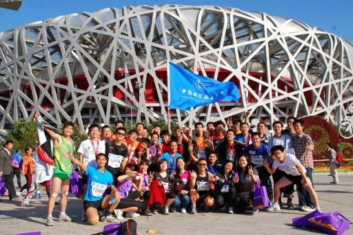
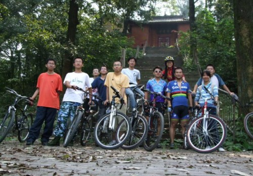

2011 Beijing International Marathon 
On Oct.16,2011, I took part in the 2011 Beijing International Marathon, together with other 53 members of Association of Science Expedition of USTC. We are not only fighting for ourselves, but also fighting for a mission to raise donations for the Excellent Teaching Award of USTC.
The day before the Marathon, the first two conditions were achieved. On Oct.16, there were 30,000 runners from many countries on the Tiananmen Square, ready to challenge their extreme limit. Many alumni came to cheer for us on the roadside.Finally, there were 53 of us finished the Marathon, and we achieved our goals! The event was reported by lots of newspapers and websites, such as China Education Daily,China National Radio,Beijing Times, Wangyi, Xinlang and Fenghuang.
I finished the full Marathon(42.195km) with time 5:34:36 , ranking 701 of female. And it makes me to be the first girl of USTC to finish the full marathon. This experience is so precious to me. I never thought I could finish the full marathon before I really made it. And I realized that if you fight for a goal and never stop your steps, you'll finally achieve it.
2011 MSRA-USTC Summer Camp 
In August 2011, I joined in the summer camp hold by USTC and MSRA with students from different countries(America,Spain,Nigeria,Tanzania,Senegal). We attended the 6th International Conference on Image and Graphics which is hold by USTC. We were so lucky to have the chance to listen to talks given by Yi Ma, John Wright, Zhouchen Lin and Mihaela. Then we worked on a small project on Kinect and Car Number Recognization. It's a very interesting experience to work with international students from different culture. Later we had a wonderful journey to Yellow Mountain, one of the most beautiful mountains in China. I enjoyed every moment of the summer camp. Though we go back to our own schools, we keep in touch on the internet. Hope the friendship lasts forever.
Volunteer Work

Love is always the most precious personality that a person should have. And we should always help people in need. I have been a member of the Volunteer Organization of USTC since Grade 1. In my first year, I went to the Special Education Center in Hefei every week. I work in the library of the center to help the disabled children to borrow books and read books. Even though they can't speak or see, they are so eager for knowledge. With smile on their faces, I was also very happy to read books for them. I feel that not only we are helping them, but also they are helping me to realize that the value of happiness lies in the happiness of people around.
In the summer holiday of 2009, I took part in the Social Practice Group of School of Information. We went to Huoshan County, which is a very poor village due to the transportation. We did surveys in each family, about their life, their income and their children. We found that most of the families are making a living by planting lily, which is a kind of vegetable as well as medicinal material. They send the lily to the buyers without process it. Since the price is comparatively low, the farmers don't get much money from it. We then presented our survey result to the local government. We also brought lots of books and donated to the local high school. In the 5 days, I saw how people struggle for their life, how students want to change their life through education. Sometimes I feel so sad that we didn't do much to help them. I hope in the future I can do more to help people in need.
In my second year, I joined SIFE, a global non-profit organization, which is aimed to improve the quality of life and standard of living for people in need. Our team went to Fuyang, Anhui Provinces to help children with AIDS. I met a three year old girl Zhenzhen living with HIV, and her parents were dead of AIDS. Her sweet smiles, in sharp contrast to that evil virus, haunt my mind always. She, with some other infected children, lives in a loft, bearing alone her own happiness and bitterness. She deserves a different life and we are responsible to enable her to expect a bright future.
I'm also a volunteer at Affiliated Hospital of Anhui Medical University to help look after children with leukemia.Watching them playing games in the activity room, my feeling is complex. They are so lovely, but why should they bear the disease at such a young age? I hope I can do more for them. The Volunteer Association organized activities to raise people's attention towards children with leukemia. Wish more children can be cured and live a happy life.
Student Cycling Association
I love cycling. It's so wonderful to ride on the bike and feel the wind bracing you. As the vice present of the Cycling Association, I organized lots of activities cycling to places in or around the city and made lots of friends with same interest. There are so many memorable experiences in the cycling association, and the craziest one is cycling to Nanjing in one day, with the distance 200km. I remember the time I run around the playground everyday for 2 months to prepare for it, and orgazined 5 friends to plan for our journey together. We cycled from 5:00am to 8:00pm and met so many problems, losing our way,cycling on the unsurfaced road, riding in the dark.....But finally we overcame all of it and arrived our destination. I'll never forget the moment we saw the Nanjing Yangtze River Bridge in the night and called out: Nanjing, we are coming!! I enjoy the feeling, on bike, on road.